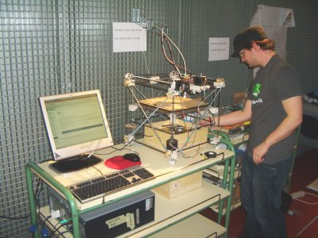
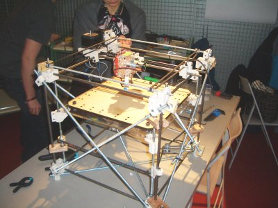
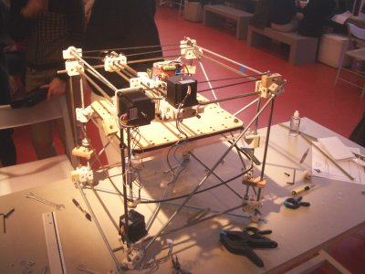
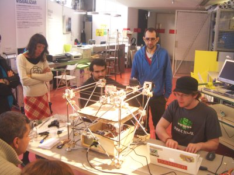
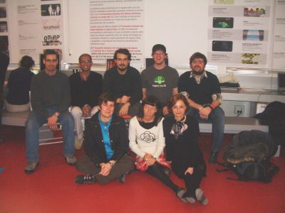
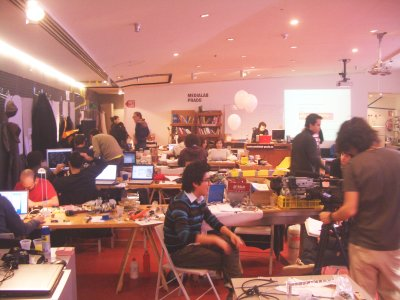

El estado de reprap al final del día (martes 10 de feb) es el siguiente: La estructura está terminada, la electrónica está añadida y el software de pruebas mueve los tres ejes cartesianos (x,y,z) así como el motor del cabezal de impresión. También se controla correctamente la temperatura del cabezal. ¡La máquina está viva!
El martes estuve todo el día en el Medialab. Se añadió el tercer motor que faltaba, se tensaron adecuadamente las correas de transmisión y se colocó el cabezal.
En esta foto se ve la estructura completa con el cabezal:


Y en esta se pueden ver mejor los tres motores paso a paso que controlan los tres ejes
de movimiento:


El siguiente paso fue añadir la electrónica. Se encuentra situada en la base de la máquina, dentro de una caja de madera. En realidad la electrónica no ocupa tanto espacio, pero como se ha usado una fuente de alimentación de PC, se decidió ponerlo todo dentro de la caja.
En seguida aparecieron problemas. Los cables de los motores eran demasiado cortos, así que hubo que extenderlos. No son errores graves, pero retrasan la puesta en marcha 🙁
Llegó el momento crítico. Zach conectó su portátil y empezó a verificarlo todo:


Las pruebas fueron un éxito. El movimiento es más suave de lo que me pensaba y la máquina vibra muy poco. Se detectaron pequeños problemas mecánicos que según Zach no tienen demasiada importancia y se corrigen facilmente. Para celebrarlo nos hicimos una foto de grupo:


Sin embargo, las cosas que deseamos se hacen esperar. Yo estaba como loco por ver la máquina “imprimiendo”. Zach nos dijo que tenía que poner a punto la última versión del software. Y es que no hay que olvidar que Reprap es un proyecto que está evolucionando. Hay gente trabajando en la estructura mecánica, otros en la electrónica y otros en el firmware/software. Su motivación es mejorar la máquina. Así que Zach estuvo toda la tarde modificando el software, y el resto de nosotros trabajando en el modelado de nuestras piezas.
Por cierto, este es el aspecto del medialab. Mesas llenas de herramientas, portátiles y diversos materiales. ¡Frikismo en estado puro!


La máquina la dejamos en una mesa independiente, conectada a un ordenador con Ubuntu, con todo el software instalado y listo para funcionar. También colocamos los cables de conexión con el cabezal (que cuelgan de un gancho en la pared), así como el hilo de plástico (ABS) que alimenta el cabezal para la impresión de las piezas.

Ahora sé que está todo listo para realizar la primera impresión. Pero eso será otra historia…
Qué bien te lo pasas macho… Y cómo me alegro de ello 🙂
Está claro que después del matrimonio… ¡el frikismo continúa! 🙂
ME FASCINA EL TRABAJO QUE HICIERON!!!
Tuve el privilegio de participar de varios cursos y talleres dictados por el Organismo Internacional de Energía Atómica (NN.UU) en el tema de Interfacing y tuve la oportunidad de hacer cosas similares a las de vuestro proyecto.
Incluso mi tesis de un curso fue diseñar un dispositivo de control de los motores a pasos que permitiese generar micropasos! alimentando las bobinas de cada paso con rampas de corriente discretizadas, trabajo que hicimos en Tahilandia. LLegué incluso a ser docente del OIEA en un curso en Madagascar en el tema de Interfases.
Me gustaría mucho estar en contacto con Uds. para intercambiar experiencias y quizás algún día pueda colaborar personalmente.
Un gran abrazo,
Rodolfo Roballo Viroga
Ingeniero en Informática
Montevideo, Uruguay
rroballo@hotmail.com
59899636399